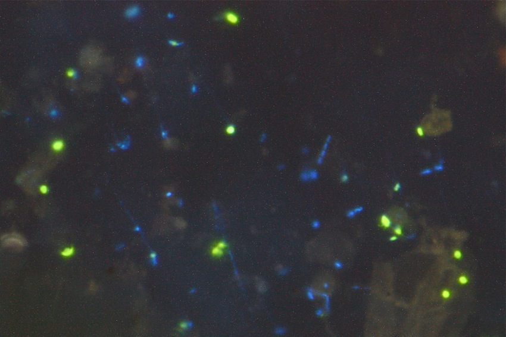
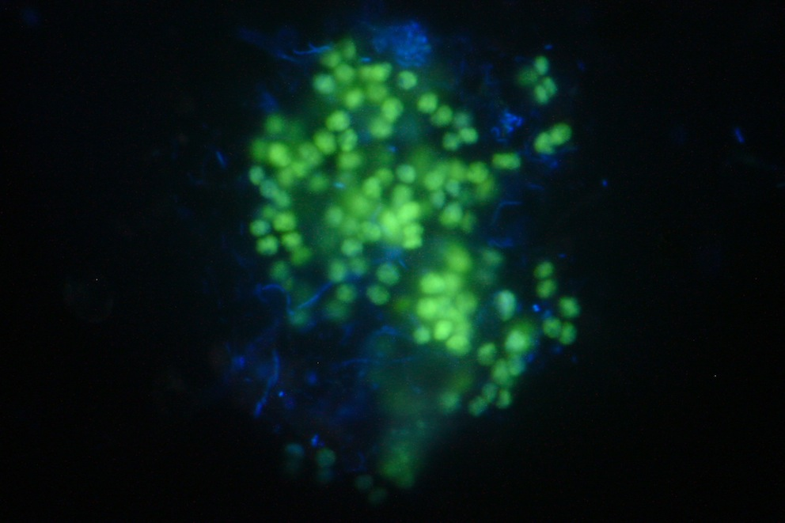
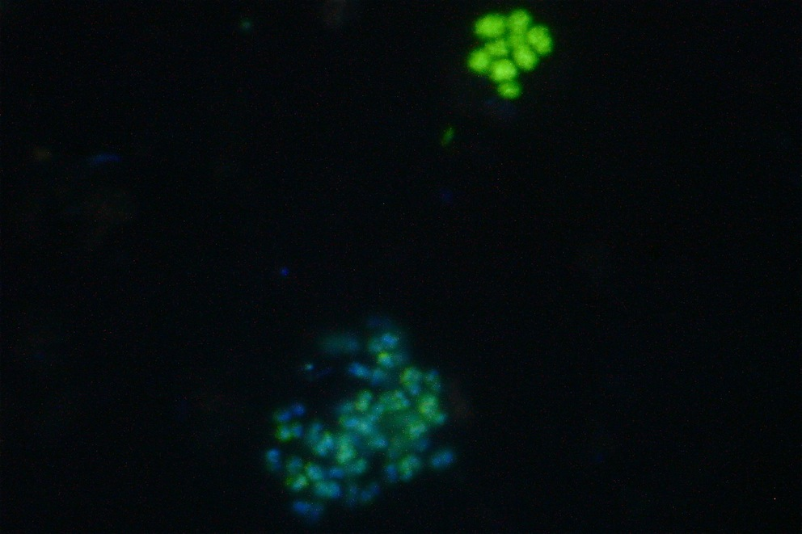
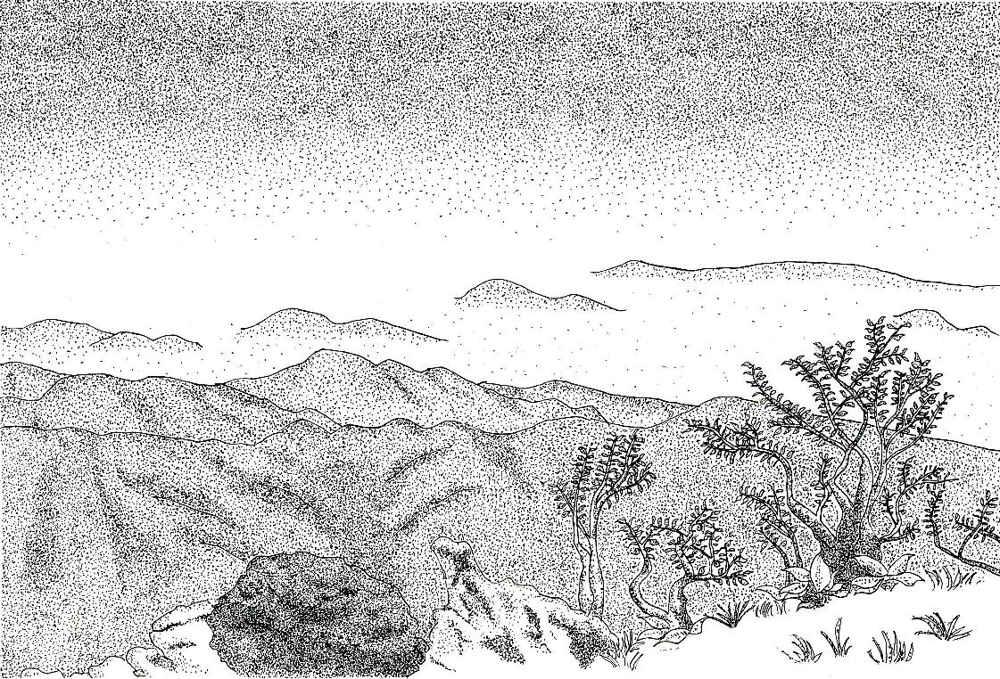
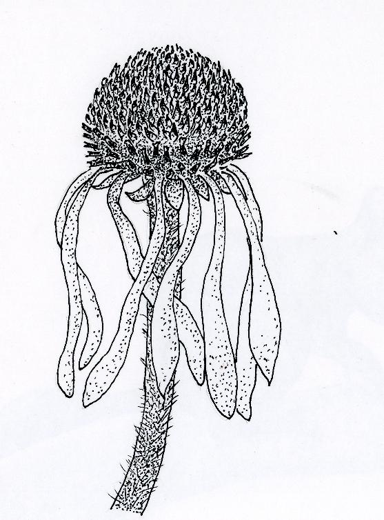
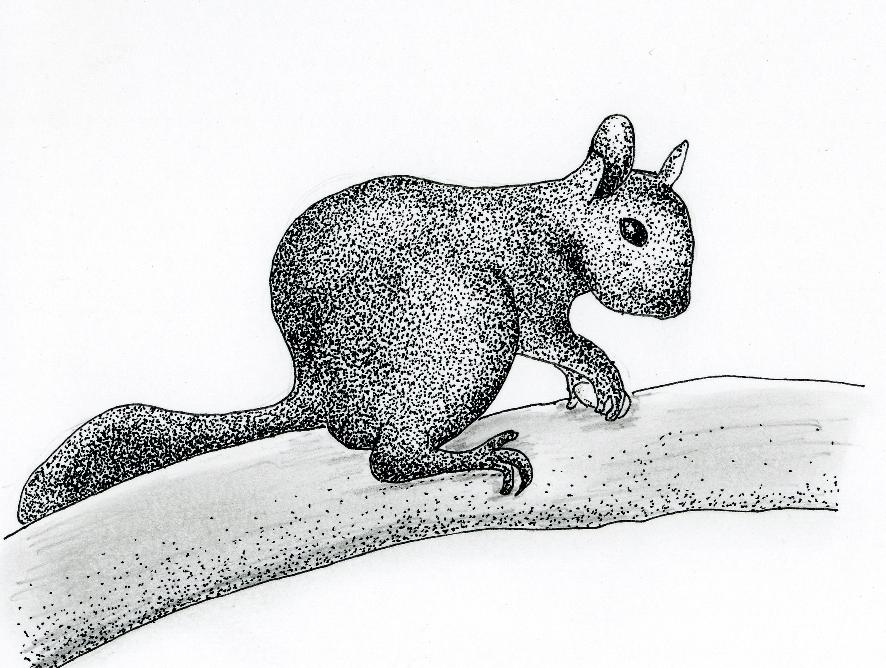

English / Japanese
Masayuki Ushio's Website
微生物の顕微鏡写真 (CARD-FISH)
*写真のスケールは全て40-60 um × 60-80 um程度。画像は見やすさ向上のため、露出、コントラストをわずかに加工してあります。

↑ツンドラ土壌の古細菌 (2011年9月、スウェーデン)。黄緑色に光っている細胞が古細菌、青色に光っているのが細菌。チラミドとDAPIによる蛍光染色。

↑池の堆積物中のα-プロテオバクテリア (2012年8月、日本)。黄緑色に光っている細胞がα-プロテオバクテリア門、青色に光っているのがその他の原核細胞。チラミドとDAPIによる蛍光染色。

↑池の堆積物中の古細菌 (2012年8月、日本)。黄緑色に光っている細胞が古細菌、青色に光っているのが細菌。チラミドとDAPIによる蛍光染色。

↑池の堆積物中の古細菌 (2012年8月、日本)。黄緑色に光っている細胞が古細菌、青色に光っているのが細菌。チラミドとDAPIによる蛍光染色。

↑池の堆積物中の古細菌 (2012年8月、日本)。黄緑色に光っている細胞が古細菌、青色に光っているのが細菌。赤色に光っているのは藻類の自家蛍光。チラミドとDAPIによる蛍光染色。
絵画
御池岳 (2008年5月、三重、日本）

Lake Mendota （2008年6月、ウィスコンシン、アメリカ）

Pale Purple Coneflower (2008年6月、ウィスコンシン、アメリカ)

リス (2008年7月、ウィスコンシン、アメリカ)

キナバル山の研究対象種 3種 (2009年2月、サバ、マレーシア)

キナバル山 (2009年3月、サバ、マレーシア)